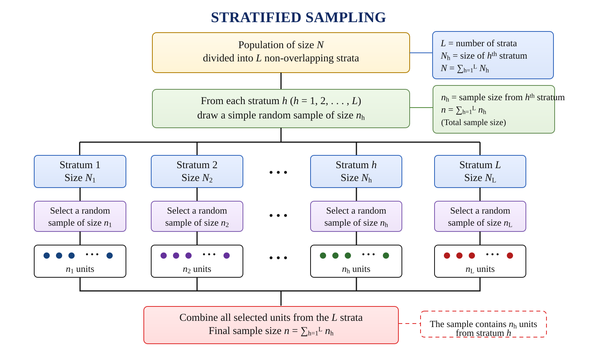
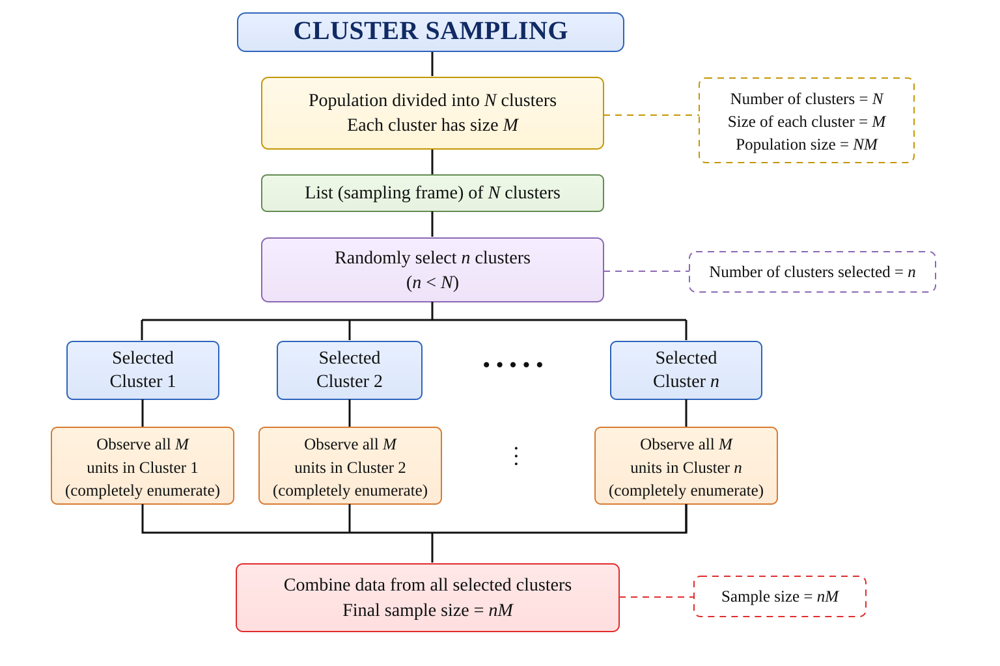

12 Sample survey
Before data can be analysed, they must first be collected in a systematic and reliable manner. The quality of any statistical analysis depends greatly on the quality of the data collected. A poorly designed survey or an unrepresentative sample can lead to misleading conclusions, regardless of the statistical methods used.
In many situations, collecting information from every unit in a population is impractical because it is time-consuming, expensive, or impossible. Instead, information is collected from a sample, which is a subset of the population. The process of selecting this subset is called sampling, and the systematic collection of information from the sample is known as a sample survey.
Sample surveys are widely used in agriculture, government, industry, business, and social sciences to obtain reliable information for research, planning, and decision-making. This chapter introduces the basic concepts of sampling and sample surveys, along with the methods used to select representative samples from a population.
When are sample surveys used?
Sample surveys are particularly useful in the following situations:
- When results are required with maximum accuracy within a fixed budget and by enumerating the minimum number of units.
- When the units under investigation show considerable variation for the characteristic being studied.
- When a total count of the population is not possible, or when the method of measurement requires destruction of the unit (e.g., testing seed germination).
- When the scope of the investigation is very wide and the population is not completely known.
- When time, money, and other resources are limited.
12.1 Basic terminology
Population is the complete collection of individuals, objects, or units about which information is required. The population is defined according to the objective of the study. For example, all rice fields in a district, all households in a village, or all dairy cattle in a state may constitute a population. The total number of units in a population is called the population size and is denoted by (\(N\)). A population may be finite (for example, all coconut trees in a plantation, which can in principle be counted) or infinite (for example, all possible bacterial colonies that could grow on a culture medium).
Sample is a subset of the population selected for the study. Information obtained from the sample is used to draw conclusions about the entire population. A good sample is one that is representative, meaning it reflects the important characteristics of the population from which it is drawn. For example, if we want to know the average milk yield of cows in a village, we study a sample of cows rather than every cow, and we use the sample result to make a statement about all the cows.
A sampling unit is the basic unit selected from the population for inclusion in the sample and on which observations or measurements are made. The population is regarded as being made up of these sampling units, which must be clearly defined and must not overlap. The nature of the sampling unit depends on the objective of the study. For example, in a crop-cutting survey, a field or a small plot marked within a field may be the sampling unit; in a household survey, a household is the sampling unit; in a livestock survey, an individual animal may be the sampling unit; and in a farmer adoption study, an individual farmer may be the sampling unit.
Census is the complete enumeration of every unit in the population. In a census, data are collected from all population units rather than from a sample. For example, the counting of every single farmer in a village to record his land holding is a census, whereas recording the land holding of only 50 selected farmers is a sample survey. A census gives exact information but is costly and time-consuming, and is often impossible when the population is very large or when measurement destroys the unit.
Sample size is the total number of sampling units included in the sample. It is usually denoted by (\(n\)). The ratio \(\dfrac{n}{N}\) is called the sampling fraction. For example, if 50 farmers are selected from a village of 500 farmers, the sample size is \(n = 50\) and the sampling fraction is \(\dfrac{50}{500} = 0.1\), or 10%.
Sampling design (Sampling method) is the procedure used to select units from the population. A good sampling design ensures that the selected sample is representative of the population, allowing reliable conclusions to be drawn. The choice of sampling design depends on the objective of the study, the nature of the population, and the resources available.
Sampling frame is the complete list or source that identifies all the sampling units in the population from which the sample is selected. It should include every unit in the target population, with no omissions or duplication. For example, if the population consists of all farmers in a village, the voters’ list, farmer registry, or village household register can serve as the sampling frame, provided it includes all farmers. An incomplete or outdated frame (for example, one that leaves out newly settled farmers) leads to a biased sample, because some units of the population never get a chance to be selected.
Parameter is a numerical constant that describes a characteristic of the entire population. Examples include the population mean (\(\mu\)), population variance (\(\sigma^2\)), and population proportion (\(P\)). Population parameters are usually unknown, and the main purpose of a sample survey is to estimate them. For example, the true average yield of paddy in a district is a parameter.
Statistic is a numerical measure calculated from sample data. Examples include the sample mean (\(\bar{x}\)), sample variance (\(s^2\)), and sample proportion (\(\hat{p}\)). Statistics are used to estimate the corresponding population parameters. Since a statistic changes from one sample to another, it is itself a random variable.
Estimator is a statistic used to estimate an unknown population parameter from sample data. It is a function of the sample observations and produces an estimate of the parameter. For example, the sample mean \(\bar{x}\) is an estimator of the population mean \(\mu\); the particular value it takes for a given sample, say 38 kg, is an estimate.
Expectation (Expected Value) of an estimator is the long-run average of the values that the estimator would take if the same sampling procedure were repeated a very large number of times. It is denoted by \(E(\cdot)\).
Suppose the average yield of a crop in a population is 40 kg per plot. If many random samples of the same size are drawn and the sample mean is calculated for each sample, the sample means will vary from one sample to another. However, the average of all these sample means will be 40 kg per plot. Thus, \(E(\bar{X})=\mu=40\).
An estimator is said to be an unbiased estimator of a population parameter if its expected value is equal to the true value of that parameter. Thus, if \(t\) is an estimator of the parameter \(\theta\), then \(t\) is unbiased if \(E(t)=\theta\). Unbiasedness means that, although a single sample estimate may be higher or lower than the true value, on average the estimator neither overestimates nor underestimates the parameter. For example, the sample mean \(\bar{x}\) is an unbiased estimator of the population mean \(\mu\).
Sampling Error is the difference between a sample estimate and the corresponding true population value that arises because only a sample, and not the entire population, is observed. Sampling error is a natural consequence of sampling and decreases as the sample becomes more representative of the population.
Sampling errors arise primarily due to: (i) faulty selection of samples (ii) substitution of sampling units already included in the study (iii) faulty demarcation of sampling units (iv) improper choice of statistical methods for estimating parameters. As long as sampling errors are sufficiently small, the sampling method can be reliably used for studying a population. Sampling errors are absent in a complete census. Increasing the sample size decreases the sampling error.
Non-sampling error are the errors other than sampling errors - such as those arising through non-response, incompleteness, or inaccuracy in recording. Data obtained from a census are free from sampling errors but are still subject to non-sampling errors. Sample survey data are subject to both types of errors.
Non-sampling errors can occur due to: (i) faulty planning and definitions - inadequate data specifications, errors in locating units, lack of trained personnel; (ii) response errors - misunderstanding of questions, or bias on the part of the interviewer or respondent; (iii) non-response bias - where full information is not obtained; and (iv) errors in coverage, compilation, and publication.
12.2 Confidence interval
A confidence interval (CI) is an interval estimate of a population parameter, such as a population mean or proportion, calculated from sample data. Instead of providing a single estimate (point estimate), a confidence interval gives a range of plausible values within which the true population parameter is expected to lie.
The confidence level of the interval is expressed as (\(100(1 - \alpha)\)%), where \(\alpha\) is the level of significance.
For example:
- If (\(\alpha\) = 0.05), the confidence level is 95%.
- If (\(\alpha\) = 0.01), the confidence level is 99%.
A 95% confidence interval means that if the same sampling procedure were repeated a very large number of times and a confidence interval were calculated from each sample using the same method, approximately 95% of those intervals would contain the true population parameter, while about 5% would not. Likewise, a 99% confidence interval would contain the true population parameter in approximately 99% of repeated samples.
It is important to note that the confidence level refers to the long-run performance of the method used to construct the interval, rather than to any single interval. Once a confidence interval has been calculated from a sample, the true population parameter either lies within that interval or it does not; the confidence level does not represent the probability that the parameter is inside that particular interval.
NoteCommon Misconception
A common misconception is that a 95% confidence interval means there is a 95% probability that the true population parameter lies within the calculated interval. This interpretation is incorrect. The correct interpretation is that the method used to construct the interval captures the true population parameter in about 95% of repeated random samples. Similarly, it does not mean that if an experiment is repeated exactly 100 times, the same conclusion will be obtained exactly 95 times.
12.3 Principal steps in a sample survey
Define the objectives of the survey.
Define the target population to be studied.
Prepare the sampling frame and identify the sampling units.
Identify the information (data) to be collected.
Design the questionnaire or schedule for data collection.
Select the method of data collection, such as personal interview, telephone interview, mail survey, or online survey.
Conduct a pilot survey (pre-test) to identify and correct any deficiencies in the questionnaire or survey procedure.
Choose an appropriate sampling design and determine the required sample size.
Organize and conduct the field survey, including procedures for handling non-response.
Scrutinize, edit, code, tabulate, and analyse the collected data.
Interpret the results and prepare the survey report.
Document and archive the survey methodology and findings for future reference.
12.4 Methods of sampling
The various methods of sampling can be grouped as shown below.

Probability sampling
Probability sampling is the scientific method of selecting samples according to the laws of probability, in which each unit in the population has a definite, pre-assigned probability of being selected. This may mean:
- All units have an equal chance of being chosen.
- Units are sometimes selected with different probabilities.
- The probability of selection is proportional to the size of the unit.
Simple random sampling
Simple Random Sampling (SRS) is the most basic and widely used probability sampling method. It is appropriate when the population is relatively homogeneous with respect to the characteristic being studied. In SRS, every unit in the population has an equal and independent chance of being selected, and every possible sample of a given size has an equal probability of selection.
There are two types of simple random sampling:
Simple Random Sampling With Replacement (SRSWR): After a unit is selected, it is returned to the population before the next draw. Therefore, the same unit may be selected more than once.
Simple Random Sampling Without Replacement (SRSWOR): After a unit is selected, it is not returned to the population. Hence, each unit can be selected only once. This is the method most commonly used in practice.
The main advantage of SRS is its simplicity and the fact that it gives every unit an equal chance, making the sample free from selection bias. Its main limitation is that it needs a complete list (frame) of all units, and if the population is spread over a wide area, visiting the randomly scattered units can be costly and time-consuming.
To select a simple random sample, all population units are assigned unique identification numbers from 1 to N. Then, n numbers are selected completely at random using methods such as the lottery method, random number tables, or computer-generated random numbers.
NoteExample
A mango orchard has 300 mango trees, and we wish to estimate the average number of fruits per tree by selecting a simple random sample of 30 trees. Each tree is assigned a unique number from 1 to 300. Using a random number generator (or a random number table), 30 distinct numbers between 1 and 300 are drawn. The trees corresponding to these numbers form the simple random sample without replacement (SRSWOR), and the number of fruits on each selected tree is counted. Because the selection is completely random, every tree, whether healthy or weak, tall or short, has the same chance of being chosen, so the sample fairly represents the whole orchard.
Stratified random sampling
In stratified random sampling, the population is first divided into non-overlapping groups, called strata, based on a characteristic such as age, gender, region, or crop variety. The units within each stratum are relatively homogeneous with respect to the characteristic of interest. A simple random sample is then selected independently from each stratum. This ensures that all strata are represented in the final sample and generally improves the precision of the estimates.
The number of units selected from each stratum may be proportional to the size of the stratum or determined using other allocation methods depending on the objectives of the survey.
NoteExample
An agricultural scientist wishes to estimate the average wheat yield of a district. The district has three types of farms: small farms (200 farms), medium farms (300 farms), and large farms (100 farms). Since farm size is likely to influence crop yield, farm size is used as the basis for stratification, and the farms are first divided into these three strata. A simple random sample is then selected independently from each stratum, for example, 20 small farms, 30 medium farms, and 10 large farms. The selected farms together constitute the stratified random sample. Because every farm size is guaranteed representation, the estimate of average yield is usually more precise than that from a simple random sample of the same size.

Systematic sampling
In systematic sampling, the population units are first arranged in an ordered list. Instead of selecting every unit at random, only the first unit is selected randomly. The remaining units are then selected at regular intervals throughout the list. This method is simple to implement and ensures that the sample is spread evenly over the entire population.
The interval between two successive selected units is called the sampling interval and is denoted by (k). It is calculated as
\[k=\frac{N}{n}\]
where N is the population size and n is the required sample size. After calculating k, a random starting number between 1 and k is chosen. Beginning with this unit, every k th unit is included in the sample until the required sample size is obtained.
NoteExample
A researcher wishes to select a sample of 20 trees from a row plantation of 300 rubber trees that are already numbered 1 to 300 along the rows. The sampling interval is \(k=\frac{300}{20}=15\). A random starting number between 1 and 15 is selected, say 8. The sample then consists of trees numbered 8, 23, 38, 53, 68, 83, and so on, continuing by adding 15 each time until 20 trees have been selected. This is easier to carry out in the field than drawing 20 separate random numbers, since the enumerator simply walks down the rows selecting every 15th tree.
Cluster sampling
In cluster sampling, the population is divided into naturally occurring groups called clusters. Instead of selecting individual units directly, a random sample of clusters is selected. Data are then collected from all units within the selected clusters. In cluster sampling the sampling units are clusters. The selected clusters are completely enumerated.
Cluster sampling is particularly useful when a complete sampling frame of individual units is not available, but a list of clusters is readily available. It reduces the time and cost of data collection, especially when the population is geographically dispersed.
NoteExample
Suppose a researcher wishes to estimate the average yield of paddy farms in a district. A complete list of all farms in the district is not available, but a list of all villages is available. Each village is treated as a cluster. A random sample of villages is selected, and data are collected from all farms in the selected villages. This saves a great deal of travel, since the enumerator visits only a few villages and covers every farm there, instead of chasing scattered individual farms across the whole district.

Non-probability sampling
In non-probability sampling, the sample is selected on the basis of the researcher’s judgement, convenience, or some other non-random criterion, rather than by giving each unit a known chance of selection. Because the selection does not follow the laws of probability, some units of the population may have no chance at all of being included. As a result, the sampling error cannot be measured, and the results cannot be validly generalised to the whole population using probability theory. Non-probability sampling is nevertheless useful when a sampling frame is not available, when the study is exploratory or qualitative, when time and money are very limited, or when the population is difficult to reach. The main methods are described below.
Convenience sampling
In convenience sampling, the researcher selects those units that are easiest to reach or most readily available, simply because they are close at hand. It is the quickest and cheapest way to collect data, but the sample is often unrepresentative, because the units that are easy to reach may differ systematically from the rest of the population. It is mostly used for quick, preliminary studies or classroom exercises rather than for drawing firm conclusions.
NoteExample
An agricultural student who wants to know the common pests of brinjal interviews only the farmers whose fields lie along the roadside next to the college, because they are easy to visit. Farmers in the interior villages, who may face very different pest problems, are left out, so the sample may give a misleading picture of the whole area.
Consecutive sampling
Consecutive sampling is similar to convenience sampling, but instead of taking one convenient group and stopping, the researcher collects data from every accessible unit (or group) one after another over a period of time, until the desired number is reached or the study period ends. By continuing over time, it can capture changes or patterns that a single convenient snapshot would miss, though it still lacks random selection.
NoteExample
A veterinary officer records the health details of every sick animal brought to a village clinic each day, continuing day after day for two months. Each day’s cases are added to the sample one after another, allowing the officer to observe how disease incidence changes over the season, even though the animals were never randomly selected.
Quota sampling
In quota sampling, the population is first divided into subgroups (for example by age, gender, or farm size), and a fixed number, called a quota, is decided for each subgroup. The researcher then collects data until each quota is filled, choosing units within each subgroup by convenience rather than at random. It resembles stratified sampling in that it guarantees representation of each subgroup, but it differs crucially because the units within a subgroup are not selected randomly, which can introduce selection bias.
NoteExample
A market research team studying demand for a new cattle feed decides in advance to interview 40 small-holding farmers and 20 large-holding farmers at a cattle fair. The interviewers approach whichever farmers are convenient until each quota is filled. The two farm-size groups are represented, but since the farmers within each group are not chosen randomly, the sample may still be biased.
Purposive (judgement) sampling
In purposive sampling, also called judgement sampling, the researcher deliberately and knowingly selects the units that are considered most useful, typical, or informative for the particular purpose of the study, relying on expert knowledge of the population. It is efficient when only a few units carry most of the relevant information, and is widely used in qualitative research or when expert opinion is needed. Its weakness is that the selection depends entirely on the researcher’s judgement, so it may carry personal bias and the results cannot be generalised to the whole population.
NoteExample
A researcher studying the best practices behind high coconut yields deliberately selects only those farmers in the village who have consistently won awards for record yields, because they are the most informative for the study. Ordinary farmers are excluded, since the aim is to learn from the top performers rather than to estimate an average.
Snowball sampling
Snowball sampling, also known as chain-referral sampling, is used when the members of the target population are hard to find or identify and no sampling frame exists. The researcher starts with one or a few known members, and then asks each of them to refer other eligible members, so the sample grows step by step like a rolling snowball. It is the practical way to reach hidden or scattered groups, but because participants tend to refer people similar to themselves, the sample may not represent the whole population.
NoteExample
A researcher wants to study farmers in a district who practise a rare traditional method of organic pest control, but there is no list of such farmers. The researcher locates one such farmer, interviews him, and asks him to name others who use the same method. Each new farmer refers still more, and in this way the sample steadily grows until enough farmers have been studied.
Limitations of sampling
- Samples may not fully cover the population, and consequently the results may not be exact.
- Sampling methods are not reliable unless trained and qualified persons are employed for data collection.
- Planning and execution must be done carefully, or the data may lead to misleading results.
TipQuotes to Inspire
“Facts are stubborn, but statistics are more pliable.” - Mark Twain
12.5 Chapter Summary
Fill in the blanks
Answers are given at the end of the chapter.
The systematic collection of information from a sample is called a __________.
The complete collection of individuals, objects, or units about which information is required is called the __________.
The total number of units in a population is called the population __________.
A population that can be counted in principle is called a __________ population.
A subset of the population selected for study is called a __________.
A sample that reflects the important characteristics of the population is called a __________ sample.
The basic unit selected from the population for inclusion in the sample is called the __________ unit.
Complete enumeration of every unit in the population is called a __________.
The total number of sampling units included in the sample is called the __________ size.
The ratio \(\frac{n}{N}\) is called the __________ fraction.
The procedure used to select units from a population is called the sampling __________.
The complete list or source identifying all sampling units in the population is called the sampling __________.
A numerical constant describing a characteristic of the population is called a __________.
A numerical measure calculated from sample data is called a __________.
A statistic used to estimate an unknown population parameter is called an __________.
The particular value obtained from an estimator for a given sample is called an __________.
The long-run average value of an estimator is called its __________.
An estimator whose expected value is equal to the true population parameter is called an __________ estimator.
The difference between a sample estimate and the corresponding population value due to observing only a sample is called __________ error.
Errors arising from non-response, inaccurate recording, faulty planning, and incomplete coverage are called __________ errors.
Sampling errors are absent when a complete __________ is conducted.
Increasing the sample size generally __________ sampling error.
A confidence interval is an __________ estimate of a population parameter.
A confidence level is expressed as \(100(1-\alpha)\) __________.
If \(\alpha=0.05\), the confidence level is __________%.
If \(\alpha=0.01\), the confidence level is __________%.
A 95% confidence interval refers to the long-run performance of the __________ used to construct the interval.
In probability sampling, every population unit has a __________ probability of selection.
In simple random sampling, every unit has an __________ and __________ chance of selection.
In SRSWR, a selected unit is __________ to the population before the next draw.
In SRSWOR, a selected unit is __________ returned to the population.
In stratified random sampling, the population is divided into non-overlapping groups called __________.
In stratified random sampling, a random sample is selected independently from each __________.
In systematic sampling, the interval between successive selected units is called the sampling __________.
The sampling interval in systematic sampling is given by \(k=\) __________.
In systematic sampling, the first unit is selected __________.
In cluster sampling, the population is divided into naturally occurring groups called __________.
In cluster sampling, a random sample of __________ is selected.
In cluster sampling, all units within the selected clusters are __________.
Probability sampling follows the laws of __________.
In non-probability sampling, the probability of selection is generally __________ known.
In convenience sampling, units are selected because they are easiest to __________.
In consecutive sampling, accessible units are selected one after another until the desired number is __________.
In quota sampling, a fixed number of units is decided for each __________.
In quota sampling, units within each subgroup are selected by __________ rather than randomly.
Purposive sampling is also called __________ sampling.
In purposive sampling, units are deliberately selected based on the researcher’s __________.
Snowball sampling is also called __________-referral sampling.
Snowball sampling is useful when the target population is difficult to __________ or identify.
The representative method of sample surveys was formally proposed by __________ in 1895.
__________ later introduced random sampling and probability-based inference into survey work.
Large-scale sample surveys in India were pioneered by __________.
Short-answer questions
Define a sample survey.
State the situations in which sample surveys are useful.
Distinguish between a census and a sample survey.
Define population and population size.
Distinguish between finite and infinite populations.
Define a sample and explain the characteristics of a representative sample.
What is a sampling unit? Give examples.
Define sample size and sampling fraction.
What is a sampling design?
What is a sampling frame? Explain its importance.
Distinguish between a parameter and a statistic.
Define estimator and estimate.
Explain the meaning of expectation of an estimator.
What is an unbiased estimator?
Explain sampling error and state its causes.
What is non-sampling error? Give examples.
Distinguish between sampling error and non-sampling error.
What is a confidence interval?
Explain the meaning of a 95% confidence interval.
Why is it incorrect to say that there is a 95% probability that the population parameter lies within a particular calculated confidence interval?
List the principal steps involved in conducting a sample survey.
Define probability sampling.
What is simple random sampling?
Distinguish between SRSWR and SRSWOR.
State the advantages and limitations of simple random sampling.
Explain the procedure for selecting a simple random sample.
What is stratified random sampling?
Explain the advantages of stratified random sampling.
Distinguish between stratified random sampling and simple random sampling.
What is systematic sampling?
Explain the procedure for selecting a systematic sample.
What is cluster sampling?
Explain the advantages of cluster sampling.
Distinguish between stratified sampling and cluster sampling.
Define non-probability sampling.
State the limitations of non-probability sampling.
What is convenience sampling?
What is consecutive sampling?
What is quota sampling?
Distinguish between quota sampling and stratified random sampling.
What is purposive sampling?
What is snowball sampling?
When is snowball sampling useful?
State the limitations of sampling.
Explain the contribution of Anders Nicolai Kiaer to sample surveys.
Explain the contributions of Arthur Lyon Bowley and P.C. Mahalanobis to sample survey methodology.
Numerical and conceptual questions
Answers are given at the end of the chapter.
A village has 500 farmers, of whom 50 are selected for a survey. Find the sample size and sampling fraction.
A population contains 1,000 units and a sample of 100 units is selected. Calculate the sampling fraction.
A population contains 300 mango trees and a sample of 30 trees is required. Explain how an SRSWOR can be selected.
A researcher wants to select 20 trees from 300 trees arranged in an ordered list. Calculate the systematic sampling interval.
If the sampling interval is 15 and the random starting number is 8, list the first 10 units selected using systematic sampling.
A district contains 200 small farms, 300 medium farms, and 100 large farms. A stratified sample of 60 farms is required using proportional allocation. Determine the number of farms to be selected from each stratum.
A population consists of 600 farms. If 10% of the farms are selected, calculate the sample size and sampling fraction.
Explain whether selecting every 10th household after randomly selecting the first household is simple random sampling or systematic sampling.
A researcher divides farmers into small, medium, and large farms and independently selects farmers from each group using random sampling. Identify the sampling method.
A researcher randomly selects 5 villages and collects information from every farm in those villages. Identify the sampling method and explain why.
A student interviews only farmers whose fields are located along the roadside because they are easily accessible. Identify the sampling method and state its main limitation.
A researcher decides to interview 40 small farmers and 20 large farmers at a market, selecting convenient farmers until each quota is filled. Identify the sampling method.
A researcher studying high-yielding coconut farmers deliberately selects farmers who have won awards for high yields. Identify the sampling method.
A researcher studying farmers practising a rare traditional farming method identifies one farmer and asks that farmer to refer other eligible farmers. Identify the sampling method.
A survey is conducted with a 95% confidence level. Find the value of \(\alpha\).
A survey is conducted with \(\alpha=0.01\). Determine the confidence level.
Explain why a census does not have sampling error but can still have non-sampling error.
Explain why increasing sample size generally reduces sampling error.
A sample estimate of average crop yield is 38 kg, while the true population mean is 40 kg. Calculate the sampling error.
A sample mean is used to estimate a population mean. Explain why the sample mean is considered an unbiased estimator of the population mean.
Explain why an incomplete or outdated sampling frame can produce a biased sample.
Compare SRS, stratified sampling, systematic sampling, and cluster sampling in terms of how the sample is selected.
Compare probability sampling and non-probability sampling.
Explain why quota sampling resembles stratified sampling but is not a probability sampling method.
A population is geographically scattered and visiting individual units is expensive. Which probability sampling method may reduce travel cost? Explain.
Important formulae
Sampling fraction:
\[f=\frac{n}{N} \tag{12.1}\]
Systematic sampling interval:
\[k=\frac{N}{n} \tag{12.2}\]
Confidence level:
\[\text{Confidence level}=100(1-\alpha)\% \tag{12.3}\]
Expected value of an estimator:
\[ E(t) \]
Unbiased estimator:
\[E(t)=\theta \tag{12.4}\]
Expected value of the sample mean:
\[ E(\bar{X})=\mu \]
Quick revision
- Sample survey → systematic collection of information from a sample.
- Population → complete collection of units under study.
- Population size → \(N\).
- Sample → subset of the population selected for study.
- Sample size → \(n\).
- Sampling fraction → \(\frac{n}{N}\).
- Sampling unit → basic unit selected from the population.
- Census → complete enumeration of every population unit.
- Sampling design → procedure used to select the sample.
- Sampling frame → complete list or source identifying the sampling units.
- Parameter → numerical characteristic of the population.
- Statistic → numerical measure calculated from sample data.
- Estimator → statistic used to estimate a population parameter.
- Estimate → particular value obtained from an estimator.
- Unbiased estimator → estimator whose expected value equals the true parameter.
- Sampling error → difference caused by observing a sample rather than the entire population.
- Sampling error is absent in a census.
- Increasing sample size generally decreases sampling error.
- Non-sampling error → errors other than sampling error.
- Census data can still contain non-sampling errors.
- Confidence interval → interval estimate of a population parameter.
- Confidence level → \(100(1-\alpha)\%\).
- \(\alpha=0.05\) → 95% confidence level.
- \(\alpha=0.01\) → 99% confidence level.
- A 95% confidence interval describes the long-run performance of the interval construction method.
- Probability sampling → selection based on probability laws.
- Simple random sampling → every unit has an equal and independent chance of selection.
- SRSWR → selected unit is returned before the next selection.
- SRSWOR → selected unit is not returned.
- SRS requires a complete sampling frame.
- Stratified sampling → population divided into non-overlapping strata and samples selected independently from each stratum.
- Stratification generally improves precision when strata are internally homogeneous.
- Systematic sampling → select a random start and then every \(k\)th unit.
- Systematic sampling interval → \(k=\frac{N}{n}\).
- Cluster sampling → select clusters randomly and enumerate all units within selected clusters.
- Cluster sampling is useful when individual-unit frames are unavailable and the population is geographically dispersed.
- Probability sampling permits probability-based inference.
- Non-probability sampling → selection based on convenience, judgement, quota, or other non-random criteria.
- Convenience sampling → select easily accessible units.
- Consecutive sampling → collect every accessible eligible unit sequentially until the required number or study period is reached.
- Quota sampling → fill predetermined subgroup quotas using non-random selection.
- Purposive sampling → researcher deliberately selects informative or suitable units.
- Snowball sampling → existing participants refer additional participants.
- Non-probability sampling can be useful when a sampling frame is unavailable or the population is difficult to reach.
- Non-probability sampling generally does not allow sampling error to be measured using probability theory.
- Kiaer → Representative Method, 1895.
- Bowley → introduced random sampling and probability-based inference into survey work.
- P.C. Mahalanobis → pioneered large-scale sample surveys in India.
- Good survey design, representative sampling, trained data collectors, and careful execution are essential for reliable results.
Answers to fill in the blanks
1. Sample survey 2. Population 3. Size 4. Finite 5. Sample 6. Representative 7. Sampling 8. Census 9. Sample 10. Sampling 11. Design 12. Frame 13. Parameter 14. Statistic 15. Estimator 16. Estimate 17. Expectation 18. Unbiased 19. Sampling 20. Non-sampling 21. Census 22. Decreases 23. Interval 24. Percent 25. 95 26. 99 27. Method 28. Definite 29. Equal; independent 30. Returned 31. Not 32. Strata 33. Stratum 34. Interval 35. \(\frac{N}{n}\) 36. Randomly 37. Clusters 38. Clusters 39. Enumerated 40. Probability 41. Not 42. Reach 43. Reached 44. Subgroup 45. Convenience 46. Judgement 47. Judgement 48. Chain 49. Find 50. Anders Nicolai Kiaer 51. Arthur Lyon Bowley 52. Prasanta Chandra Mahalanobis
Solutions to numerical and conceptual questions
Using Equation 12.1, \(n=50\) and \(f=\frac{50}{500}=0.10\) (10%).
Using Equation 12.1, \(f=\frac{100}{1000}=0.10\) (10%).
Assign the numbers 1 to 300 to the mango trees and draw 30 distinct random numbers (by lottery, random number table, or computer); the corresponding trees form the SRSWOR.
Using Equation 12.2, \(k=\frac{300}{20}=15\); every 15th tree is selected after a random start between 1 and 15.
With \(k=15\) and random start 8, the selected units are 8, 23, 38, 53, 68, 83, 98, 113, 128, 143, …, each obtained by adding 15.
Here \(N=200+300+100=600\) and \(f=\frac{60}{600}=0.10\), so under proportional allocation the sample is \(200(0.10)=20\) small, \(300(0.10)=30\) medium, and \(100(0.10)=10\) large farms.
With \(N=600\) and \(f=0.10\), \(n=600(0.10)=60\); using Equation 12.1, \(f=\frac{60}{600}=0.10\) (10%).
Systematic sampling: the first household is chosen at random and thereafter every 10th household is selected at a fixed interval.
Stratified random sampling: the population is divided into strata by farm size and random samples are selected independently from each stratum.
Cluster sampling: villages are treated as clusters, a random sample of villages is drawn, and all farms in the selected villages are enumerated.
Convenience sampling: only easily reached farmers are selected; its main limitation is that the sample may be unrepresentative and subject to selection bias.
Quota sampling: fixed quotas are set for small and large farmers, but units within each group are chosen by convenience rather than at random.
Purposive (judgement) sampling: the researcher deliberately selects the award-winning farmers considered most useful for the study.
Snowball (chain-referral) sampling: an identified farmer refers other eligible farmers practising the rare method.
Using Equation 12.3, \(100(1-\alpha)=95\), so \(\alpha=0.05\).
Using Equation 12.3, confidence level \(=100(1-0.01)=99\%\).
A census enumerates every unit, so there is no sampling error; but non-sampling errors (non-response, recording, coverage, processing) can still occur.
As the sample size increases, the sample becomes more representative of the population, so the sampling error generally decreases.
Sampling error is the difference between estimkate and true population value. It can be calculated as \(=38-40=-2\), so the estimate is 2 units below the population value.
The sample mean is unbiased because \(E(\bar{X})=\mu\); over repeated samples the average of the sample means equals the population mean.
An incomplete or outdated frame gives some population units no chance of selection, producing selection bias and an unrepresentative sample.
In SRS units are drawn individually at random; in stratified sampling random samples are drawn within strata; in systematic sampling every \(k\)th unit is taken after a random start; in cluster sampling whole clusters are drawn and fully enumerated.
Probability sampling uses random selection with known probabilities and permits sampling error to be estimated; non-probability sampling uses non-random selection, so some units may have no chance of selection and sampling error cannot be measured.
Both divide the population into subgroups, but stratified sampling selects units within each stratum randomly, whereas quota sampling fills each subgroup by convenience, so only stratified sampling is a probability method.
Cluster sampling reduces travel and data-collection cost, since only a few clusters are visited and every unit within them is enumerated, rather than chasing scattered individual units.
CautionHistorical Insights
The Origin of Sample Surveys - Kiaer’s Representative Method
The idea that a carefully chosen sample could stand in for an entire population - without the expense and labour of a complete census - was not obvious to statisticians in the nineteenth century. It was a Norwegian statistician named Anders Nicolai Kiaer who first formally proposed this idea in 1895, calling it the Representative Method. Kiaer presented his method at the International Statistical Institute, arguing that a partial investigation, if designed carefully, could yield results as reliable as a full census. His proposal was initially met with scepticism by fellow statisticians who believed that only a complete enumeration could be trusted. (Kiaer 1895)
It took decades before the idea gained wide acceptance. Arthur Lyon Bowley later placed Kiaer’s method on a firm mathematical footing by introducing random sampling and probability-based inference to survey work in the early twentieth century. (Bowley 1906) The modern theory of sample surveys was then comprehensively developed by Prasanta Chandra Mahalanobis in India, who pioneered large-scale sample surveys in the 1930s and 1940s through the Indian Statistical Institute, demonstrating that national-level estimates of crop production and population could be obtained efficiently through sampling. (Mahalanobis 1944)
Today, the sample survey is the backbone of agricultural statistics, public health research, national economic planning, and opinion polling worldwide - all built on Kiaer’s initially controversial idea from a statistical conference in 1895.